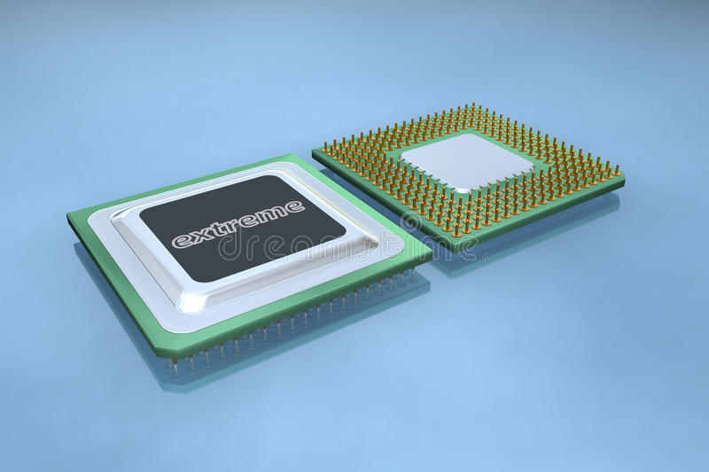

Processador

O processador é a unidade central de processamento de um computador (CPU), que funciona como o cérebro do computador, pois interage e faz as conexões necessárias entre todos os programas instalados.
Neste processo, ele também interpreta as informações enviadas pelos programas, realiza diversas operações, inclusive gerando a interface que nós interagimos quando usamos um computador.
Os processadores são colocados na Placa-Mãe, por soquetes, e sua estrutura é composta por bilhões de transistores.
Comprar um novo PC ou montar seu próprio computador pela primeira vez pode ser trabalhoso. Não faltam opções de configurações no mercado, e nem sempre é fácil distinguir entre muitas delas. Escolher um processador, por exemplo, pode ser desgastante.
Há tempos a maioria das grandes fabricantes de PCs optam por usar processadores da Intel em seus produtos, mas, para o público menos inserido nesse mercado, é difícil entender a diferença entre os modelos apenas pelo nome. Intel Core i3, i5, i7, i9, Celeron, Pentium… a nomeclatura não conhece limites.
Nem sempre o mais caro é o melhor, por isso é importante entender as diferenças entre esses processadores. Pois então, vamos lá.
O que você precisa saber
A linha mais famosa da Intel é a que dá título a este artigo: Intel Core. Se você quer uma explicação curta para a diferença dos números, aí vai: o i3 é o mais básico, o i5 é intermediário, o i7 é mais completo e o i9 é o top de linha. Quanto maior o número, mais poderoso é o componente.
Você se engana, porém, se pensa que o assunto morre aqui. Nem todo mundo precisa pagar mais caro em um PC com Intel Core i9 só porque este é o melhor processador. Tudo depende do seu perfil e do que você pretende fazer com seu computador.
O segredo está nas entrelinhas: um i3 normalmente vem com dois ou quatro núcleos de processamento, enquanto os i5 e i7 vêm com até seis ou oito, e o i9 ultrapassa todos os limites com até 18 núcleos. Quanto mais núcleos, mais tarefas o processador pode executar ao mesmo tempo.
A velocidade com que esse processamento é executado também faz diferença: um i3 mais moderno, de oitava geração, por exemplo, pode funcionar a 3,6 GHz. Já um i5 de oitava geração pode chegar a 4,3 GHz no modo “turbo”; um i7 pode fazer 4,7 GHz e um i9 pode alcançar até 4,8 GHz de frequência.
Contudo, é possível encontrar um modelo de notebook com processador Intel Core i3 mais barato do que um outro PC que também usa Intel Core i3. Ou um i5 mais caro e mais rápido que um i7. Como explicar essa diferença? É disso o que vamos falar a seguir.
Gerações
A Intel começou a fabricar essa família de processadores em 2010. De lá para cá, a empresa já lançou oito gerações de Intel Core i3, i5 e i7 e duas do i9. Isso significa que é possível encontrar, em uma mesma loja, um PC com um i3 de quinta geração e outro com um i3 de sexta geração.
Isso explica, pelo menos em parte, por que dois PCs com um processador i3 podem ter performances e preços diferentes. Naturalmente, quanto mais novo, melhor é o processador, o que significa que um i3 de sétima geração certamente é melhor que um i3 de quinta geração.
Mas como saber qual a geração do chipset que estamos comprando? É aqui que entra aquele estranho número que a Intel coloca logo depois do i3, i5, i7 ou i9. É ele o que, normalmente, determina quão novo é aquele modelo. Um processador identificado como Intel Core i3-5XXX pertence à quinta geração, enquanto um i3-6XXX pertence à sexta – e assim por diante.
É possível encontrar modelos diferentes dentro de uma mesma geração, porém. Nesse caso, melhor é aquele que tem o número de identificação mais alto. Um Intel Core i3-6167 é melhor do que um i3-6100 porque, afinal de contas, 6167 é um número mais alto do que 6100, mesmo que ambos sejam da sexta geração.
U, Y, T, Q, H e K
Para complicar ainda mais o que já é complicado, a Intel coloca uma ou duas letras depois de toda essa numeração. São os chamados “sufixos”: U, Y, T, Q, H ou K. Às vezes, mais de uma dessas letras aparecem. E, sim, elas também fazem a diferença entre os modelos de processador.
Três delas têm a ver com quanto seu PC vai pesar na conta de luz. A letra U significa “Ultra Low Power”, o que significa que esse modelo consome menos energia; Y representa “Low Power”, que ainda consome pouco, mas mais do que o U; e T indica “Power Optimized”, para um consumo de energia mediano.
Já as outras três letras têm especificações mais brandas. A letra Q representa “quad-core”, isto é, quando o processador tem quatro núcleos; a letra H está ali para identificar “High-Performance Graphics”, quando o chip vem com uma boa GPU integrada; e K representa “Unlocked”, o que significa que o processador pode ir além de sua velocidade pré-determinada através de um overclock.
Portanto, se você se deparar com um notebook que diz na embalagem que vem com um processador Intel Core i5-5200U, você já sabe que ele usa um modelo intermediário de quinta geração e com um nível de consumo de energia mais baixo. Já um Intel Core i7-6920HQ é um modelo top de linha de sexta geração, com uma competente GPU, e é capaz de ir além da sua velocidade pré-determinada de clock.
Eis um dicionários simples para cada sufixo:
.K – “Unlocked”, significa que o processador pode ir além de sua velocidade pré-determinada através de um overclock;
.G – Inclui placa de vídeo integrada (apenas para laptops);
.U – “Ultra Low Power”, ou baixo consumo de energia (apenas para laptops);
.T – “Power-optimized”, economiza energia, mas não tanto quanto o modelo U;
.H – “High performance graphics”, inclui placa de vídeo integrada um pouco melhor que o modelo G;
.Y – “Extremely low power”, economiza ainda mais energia do que o modelo U;
.Q – “Quad-core”, ou simplesmente “quatro núcleos”;
.M – “Mobile”, modelo exclusivo para laptops;
.C – Possui opção de overclock, soquete LGA 1150, placa de vídeo integrada básica;
.R – Processor de desktop baseado no soquete BGA 1364 com placa de vídeo integrada avançada;
.S – Otimizado para performance;
.X – “Extreme Edition”, performance melhorada.